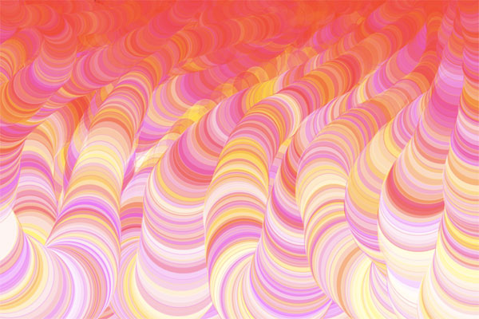
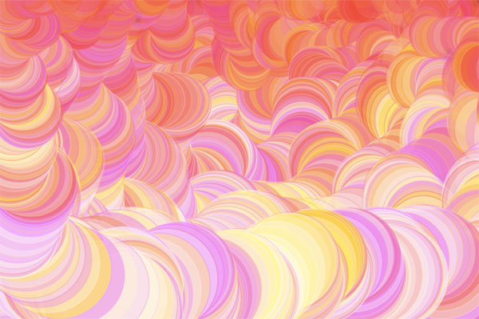
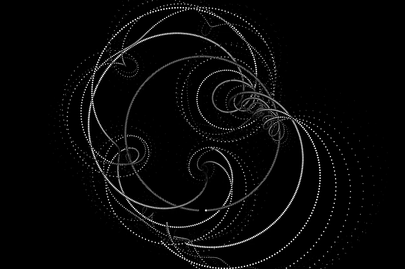
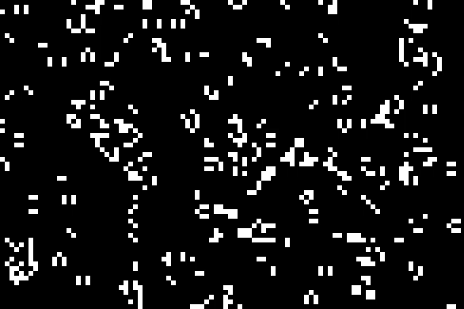

Creative Coding / Animation
If Dr. Seuss Was A Programmer
I created this "drawing" mechanism that would enable me to create costume visuals that variate in size and color as well as overall aesthetic depending on the movement of the mouse. Dr. Seuss' The Lorax and his overall aesthetic in his books was definitely an inspiration while creating this tool in p5.js. It was created through code in Java Script language. It is mainly a visual piece that can result in many different types of renders.


Words That Broke My Heart
3
These two pieces were created in order to visualize words that I heard and read that immediately broke my heart. Through the use of color animation in the text, I intend to complicate the reading of these words in order to give focus to every single word, which in context, broke my heart one word at a time.
Some Things Never Change
This animation was created using p5.js. It was created through code in Java Script language. The photograph in the 3D shapes was taken by me. The text in the hands says: Some Things Never Change - therefore, the name of my piece.
Other works

